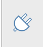
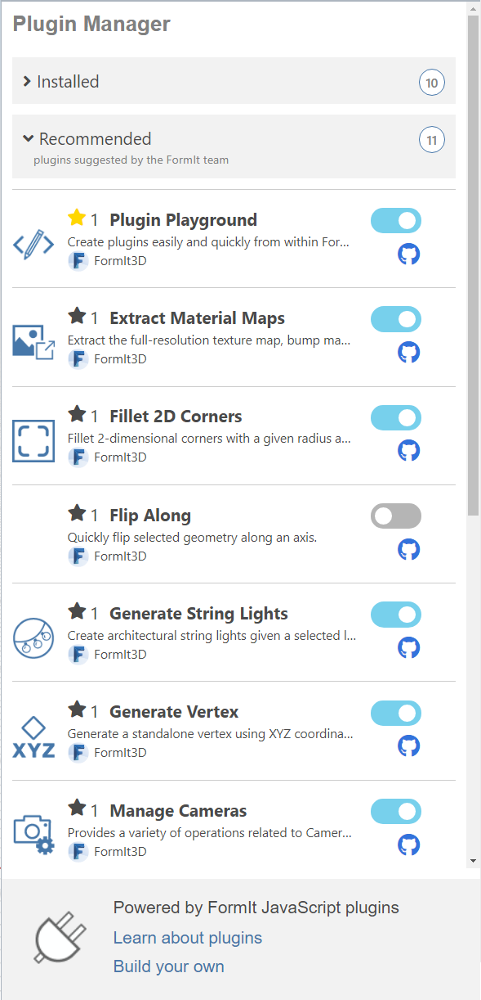

Get started with plugins today! Use the Plugin Manager to install useful plugins from the FormIt Team, or learn how to build your own FormIt plugins!
Plugin Manager
The FormIt Plugin Manager is your one-stop shop for discovering and managing plugins.
Access to the Plugin Manager is limited to certain versions of FormIt:
- FormIt for Windows v16
- At the top of the application, click the Window menu and check Script Editor. You'll see a new window appear at the bottom of the screen. Learn more about the Script Editor and Script Output windows.
- Copy and paste the following command into the Script Editor:
- FormIt.InstallPlugin("https://formit3d.github.io/FormItExamplePlugins/PluginManagerPlugin");
- Click the Play icon at the top of the Script Editor to run the command.
- The Plugin Manager should load in a panel on the right side of the application:
- FormIt for Windows v17
- The Plugin Manager is loaded automatically when FormIt starts, as long as FormIt has access to the internet.
- Access it by clicking its tab icon on the right side of the app:
- 

The Plugin Manager automatically includes two repositories from the FormIt Team:
- FormIt Workflow Plugins
- Try new workflows like rebuilding curves, filleting 2D arcs, moving all cameras, quick-flipping geometry about an axis, and more.
- Updated regularly with new plugins. Have a plugin you'd like us to build? Let us know on GitHub!
- FormIt Example UI Plugins
- Learn how FormIt Plugins work by seeing examples of various UI types: HTML panels, toolbars, and dialogs.
- Use as a starting point when building your own plugins!
- Having issues? Drop us a line on GitHub.
The Plugin Manager is designed using a series of expandable and collapsible interfaces, which makes managing plugins and their repositories easy:
- Managing Repositories:
- Click a repo name to expand or collapse the list of plugins it contains.
- The FormIt Workflow Plugins repo always expands when the Plugin Manager loads.
- You can link new plugin repositories, including your own locally-hosted server when building plugins, by pasting the URL to the repository folder in the text box at the top, then hitting (+).
- You can unlink plugin repositories by clicking the (-) button next to the repo name.
- Unlinking the two default plugin repositories, FormIt Example Plugins and FormIt Workflow Plugins, is not recommended.
- If you unlinked the default repos and want to add them again, copy and paste the following URLs into the box at the top and hit (+):
- https://formit3d.github.io/FormItWorkflowPlugins
- https://formit3d.github.io/FormItExamplePlugins
- Managing Plugins:
- Click on a plugin name to see its description.
- Check the plugin checkbox to install it.
- The plugin will manifest as a toolbar at the top of the application, a panel on the right side, or a dialog in the middle, depending on the plugin.
- Uncheck the plugin checkbox to uninstall it.
How Plugins Work
- Plugins are comprised of a series of files and folders hosted on GitHub, or on a local server when building your own.
- External plugins (plugins not hosted locally) require an internet connection to initially load, which means:
- External plugins will not load if no internet connection is detected when FormIt starts.
- Once loaded, some external plugins can continue to work in offline mode for that session, but others might break until connectivity is restored.
- External plugins load the latest code on the server at every run, so their functionality will update whenever the author pushes a change.
- Plugins are loaded asynchronously, which means the order of the repositories and plugins in the Plugin Manager may change between FormIt sessions.
- The Plugin Manager uses registry keys on Windows to store your installed repositories and plugins.
- If you need to reset your Plugin Manager to its defaults, delete the following registry key:
- Computer\HKEY_CURRENT_USER\Software\Autodesk\FormIt 360\Plugins
- Note this will uninstall all user-added repos and plugins, resetting the Plugin Manager to include only the built-in repos and plugins.
- FormIt plugins are under active development, and are currently limited to the following FormIt versions:
- FormIt for Windows v16 and newer